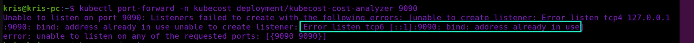
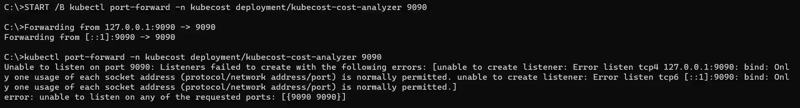
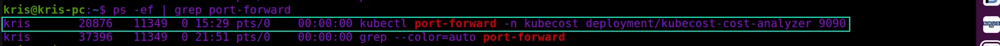
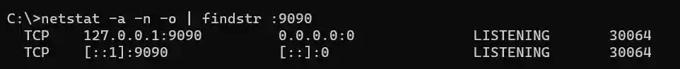
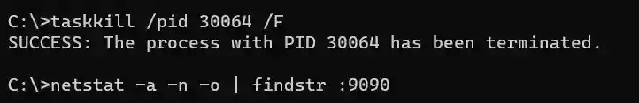
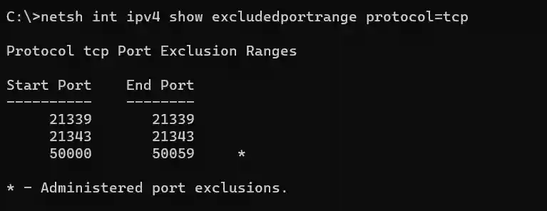
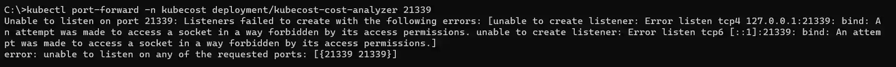

Kubernetes Port Forwarding: Cleaning Up Orphaned Ports
Introduction
When working with Kubernetes there may be cases where you may need to use port forwarding to get access to an application running inside the cluster. Some of the use cases may be:
- accessing information in internal applications that are not meant to be exposed for public access
- verifying that the application works as expected prior to exposing it for public access
- troubleshooting purposes
Port forwarding is a functionality that is available in Kubernetes via kubectl port-forward command. This command creates a direct connection between the caller (typically a client machine) and the Pod where the application is running inside the cluster. You can either target a specific Pod or any Pod fronted by Kubernetes resources like Service or Deployment. You can read more about the command in official documentation: port-forward.
Normally, once you stop port forwarding the port that was reserved on the client side should be cleaned up and made available for other processes to consume. If this doesn’t happen instantly it should happen upon the connection reaches the timeout defined by the system. But sometimes this doesn’t happen and the port ends up being orphaned, i.e. there isn’t any process using the port anymore, or the process that was using the port has finalized the related operation and doesn’t need the port anymore, but the system still counts it as a port-in-use. In this case, if you attempt to use the same port again by, for example, re-running the port forwarding command, you may end up seeing an error message saying something like Unable to listen on port <PORT>: Listeners failed to create with the following errors: [unable to create listener: Error listen tcp4 <IP>:<PORT>: bind: address already in use unable to create listener: Error listen tcp6 [::1]:<PORT>: bind: address already in use], as shown in the screenshot below:

In Windows the message may look a bit differently:

Another likely scenario is when you have been running kubectl port-forward command in the background and would now like to terminate the operation. You can do that by detecting the related process and terminating it, which will also free up the respective port.
In Linux you can run port forwarding in the background by adding
&in the end of the command, for example:kubectl port-forward -n <resource_namespace> <resource_name> <forward_port> &In Windows you can run port forwarding in the background by using
START /Bcommand in cmd:START /B kubectl port-forward -n <resource_namespace> <resource_name> <forward_port>
Is there a way to free up the port in this case?
There is indeed! We just need to dig into the TCP/IP basics to get this done 😊
Linux
In Linux distributions like Ubuntu there are multiple ways you can locate and terminate a process holding an orphaned port, but I will show a combination of ps and kill commands.
First, we will need to locate the processes related to port forwarding in the list of the currently active processes, which we can retrieve with help of ps command: ps -ef | grep port-forward
-e parameter retrieves all processes and -f handles output format to be full-format listing. The output of the ps command is piped to grep command to extract only the entries that include the port-forward keyword.

As you can see, the first entry in the above screenshot represents the port forwarding process that was terminated earlier, but it’s still holding the port. We can free it up by terminating the holding process immediately with help of kill command: kill -9 20876
-9 sends a SIGKILL signal to terminate the process with ID (PID) 20876, which is displayed in the second column of the highlighted entry above. Once kill command is executed we can re-run the ps command to verify that the process holding the port is not in the list anymore. Now the port can be re-used.
Windows
As in Linux, there are multiple ways you can locate and terminate a process in Windows, but I will show a combination of netstat and taskkill commands. First, we will need to locate the processes related to port forwarding in the list of the currently active processes, which we can retrieve with help of netstat command: netstat -ano | findstr :9090
-a parameter retrieves all active TCP connections with respective TCP/UDP ports, -n parameter displays addresses and port numbers numerically and -o parameter includes the process ID (PID) in the output. The output of netstat command is piped to findstr command to extract only the entries the include the port number used in the respective kubectl port-forward command.

As you can see in the above screenshot we have a process with ID (PID) 30064 that is connected to the port forwarding operation and the associated port. We can terminate the process immediately and as a result free up the port with taskkill command: taskkill /pid 30064 /F
/F performs an immediate termination of the process with ID provided as /pid parameter value, which is 30064 in our case. Once the taskkill command is executed we can re-run the netstat command to verify that the process holding the port is not listed anymore. Now the port can be re-used.

Reserved ports
One final thing that is worth noting is port reservations. Prior to running the port forwarding command you should ensure that you’re not targeting a port that is already reserved, otherwise the command may fail. This can be especially relevant in an enterprise setting where some companies may by default reserve a range of ephemeral ports that will not be allowed to be assigned to any programs or processes.
In Windows you can check the reserved port range by running netsh command: netsh int ipv4 show excludeportrange protocol=tcp

If I now attempt to perform port forwarding and target one of the reserved ports from the above screenshot, for example 21339, I will get following error message:

In Linux you can check if any ports are reserved by running sysctl command: sysctl net.ipv4.ip_local_reserved_ports
That’s it from me this time, thanks for checking in!💖
If this article was helpful, I’d love to hear about it! You can reach out to me on LinkedIn, Twitter, GitHub or by using the contact form on this page.😺
Stay secure, stay safe.
Till we connect again!😻